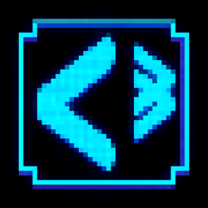
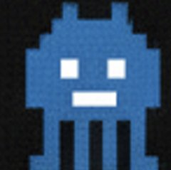
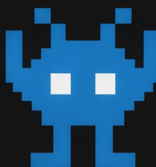
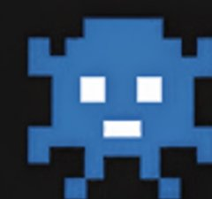
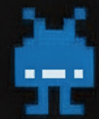
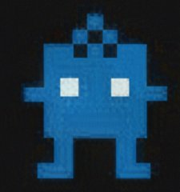
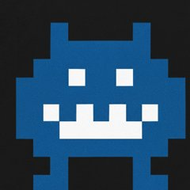
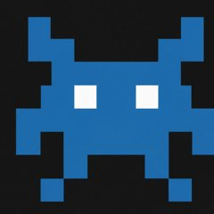
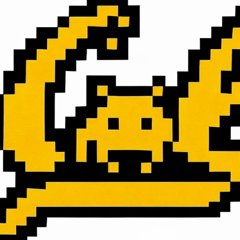

Sep 2025 – PresentFlutter · SupabaseLaunched at 4 UC campuses

CITRIS QuestApp Developer, CITRIS and the Banatao Institute
A cross-platform mobile game inspired by Space Invaders that was created to celebrate CITRIS' 25th anniversary. Players walk around campus and scan pixel-art artworks with their phone camera to earn XP and coins. I built it with a five-person team under CITRIS Director Alexandre Bayen and launched it across four UC campuses: UC Berkeley, UC Davis, UC Santa Cruz, UC Merced.
- Built the camera scanning flow: real-time preview, capture, offline mode and runtime permissions.
- Built game systems including achievements, a global leaderboard and profile activity timelines.
- Implemented the Supabase (PostgreSQL) backend for a Printify rewards store, with row-level security and transactional PL/pgSQL functions for purchases (atomic coin deductions, optimistic locking, rollback).
- Designed the retro arcade UI in Figma and built it in Flutter with CustomPainter pixel-art icons and 3D flip animations.
- Tested computer-vision recognition of 10+ artworks under different lighting and angles on iOS and Android before launch.
- Deployed the Flutter web store and landing page to GitHub Pages with GitHub Actions CI/CD.







